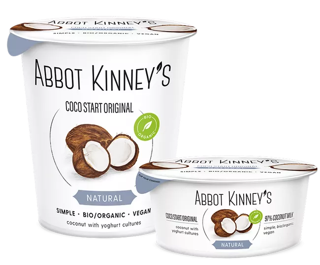

Coco start natural
Het grote avontuur van Abbot Kinney’s is begonnen met deze geliefde kokosyog held: Coco Start. Die romige textuur, de zachte smaak van kokosmelk, de frisse smaak van yoghurtculturen… we waren op slag verliefd.
Coco Start is gemaakt van slechts drie plantaardige ingrediënten die we zorgvuldig hebben gekozen en met liefde hebben verwerkt. Moeilijker dan dit hoeft jouw kokosyog echt niet te zijn.
Een mooie bonus is dat plantaardige kokosyog van nature minder suikers bevat dan reguliere naturel yoghurt.
Goed om te weten
Kokosmelk bevat verzadigde vetten en die geven je snel een vol gevoel. Een paar eetlepels van Coco Start 400mL, of een cupje Coco Start kokosyog van 125mL met wat fruit, muesli of noten is daarom vaak al genoeg voor een voedzaam plantaardig ontbijt of tussendoortje.
Wil je meer weten over kokosvetten in kokosyog?Bekijk onze FAQ.
Voor de rest
Coco Start is een vegan kokosyog, bevat geen soja en is glutenvrij. Geschikt voor veganisten, vegetariërs en alleseters.